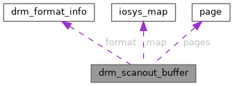

|
XenevaOS
|
#include <drm_panic.h>

Public Attributes | |
| const struct drm_format_info * | format |
| struct iosys_map | map [DRM_FORMAT_MAX_PLANES] |
| struct page ** | pages |
| unsigned int | width |
| unsigned int | height |
| unsigned int | pitch [DRM_FORMAT_MAX_PLANES] |
| void(* | set_pixel )(struct drm_scanout_buffer *sb, unsigned int x, unsigned int y, u32 color) |
struct drm_scanout_buffer - DRM scanout buffer
This structure holds the information necessary for drm_panic to draw the panic screen, and display it.
| const struct drm_format_info* drm_scanout_buffer::format |
@format:
drm format of the scanout buffer.
| unsigned int drm_scanout_buffer::height |
@height: Height of the scanout buffer, in pixels.
| struct iosys_map drm_scanout_buffer::map[DRM_FORMAT_MAX_PLANES] |
@map:
Virtual address of the scanout buffer, either in memory or iomem. The scanout buffer should be in linear format, and can be directly sent to the display hardware. Tearing is not an issue for the panic screen.
| struct page** drm_scanout_buffer::pages |
@pages: Optional, if the scanout buffer is not mapped, set this field to the array of pages of the scanout buffer. The panic code will use kmap_local_page_try_from_panic() to map one page at a time to write all the pixels. This array shouldn't be allocated from the get_scanoutbuffer() callback. The scanout buffer should be in linear format.
| unsigned int drm_scanout_buffer::pitch[DRM_FORMAT_MAX_PLANES] |
@pitch: Length in bytes between the start of two consecutive lines.
| void(* drm_scanout_buffer::set_pixel) (struct drm_scanout_buffer *sb, unsigned int x, unsigned int y, u32 color) |
@set_pixel: Optional function, to set a pixel color on the framebuffer. It allows to handle special tiling format inside the driver. It takes precedence over the @map and @pages fields.
| unsigned int drm_scanout_buffer::width |
@width: Width of the scanout buffer, in pixels.